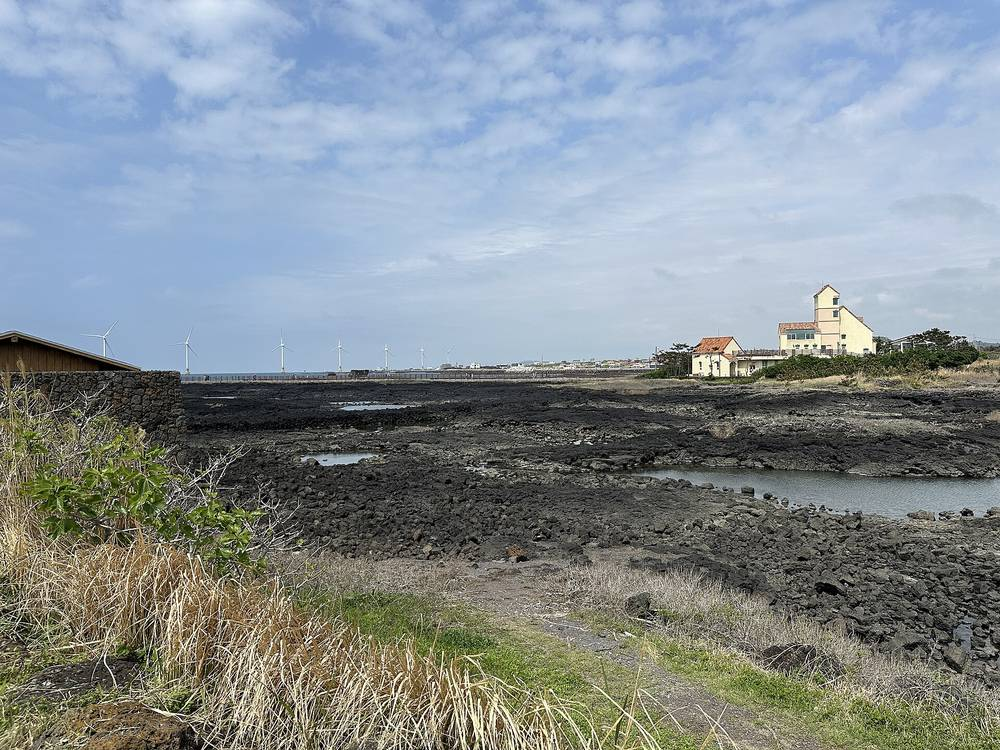

제주 어민 대책협의회, 해상풍력 협의에 '실제 조업 어업인' 참여 요구…마을 이익공유만으로는 어장 상실 못 메운다

한동·평대·대정·신창·추자 해상풍력 거론하며 착공 전 조업 실태 조사·민관협의회 구성 촉구…제주도·사업자 입장은 아직 안 나와
제주 바다에서 해상풍력이 추진되는 해역의 어민들이 발전단지 인근 마을 위주로 진행되는 협의로는 실제 조업 피해를 담을 수 없다며, 그 바다에서 조업하는 어업인이 참여하는 협의체를 만들라고 요구했다. 지난달 꾸려진 제주도 해상풍력 어민 피해 대책협의회(위원장 강용주)는 2일 제주도의회 도민카페에서 기자회견을 열고 구좌읍 한동·평대, 대정읍, 한경면 신창, 추자도 등지의 해상풍력 사업이 어업인과 충분한 소통 없이 진행되고 있다고 주장했다. 협의회는 어선이 소속 마을 앞바다에 머물지 않고 허가받은 여러 해역을 옮겨 다니며 조업하는 만큼, 마을에 발전기금이나 수익이 돌아가더라도 그 해역을 써 온 다른 지역 어업인의 어장 상실과 소득 감소는 그대로 남는다며 주민 이익공유와 조업 어업인 피해 대책을 함께 마련하라고 했다. 협의회는 앞서 들어선 한림해상풍력에서도 인근 주민·어민은 보상과 혜택을 받았지만 다른 지역에서 그 해역을 쓰던 어업인은 어장 축소와 조업 경쟁 심화를 겪었다고 주장하며, 한동·평대 사업은 착공 전에 조업 실태 조사와 피해 범위 논의가 먼저 이뤄져야 하고 소형 어선의 먼바다 이동에 따른 안전 부담, 어선원·수협·수산물 유통업 영향, 피항 어선과 해상 시설물의 충돌 위험도 따져야 한다고 했다. 입법예고된 해상풍력특별법 시행규칙 제정안에는 민관협의회 어업인단체에 영향이 예상되는 지역·업종의 수협 등을 넣는 내용이 담겼지만, 이 자료만으로 제주 개별 사업의 절차에 문제가 있다고 볼 수는 없다. 협의회는 제주도·도의회·지역 국회의원에게 조업 어업인이 참여하는 협의 구조를 요청하고, 소통 없이 사업이 진행되면 어선원·유통 종사자와 연대 집회를 열고 수협중앙회 자문을 받아 법적 대응도 검토하겠다고 밝혔으며, 제주도와 각 사업자의 입장은 이번 보도에 담기지 않았다.
시민에너지 관점
바다는 한 마을의 것이 아니라 여러 지역 어업인이 오랫동안 함께 써 온 공유자원이어서, 해상풍력 개발이익을 '발전단지에서 가까운 마을'에만 나누면 정작 그 바다에 생계를 기대 온 사람들이 빠지는 구멍이 생긴다. 당사자 범위를 넓히면 협의가 끝없이 길어진다는 걱정이 있겠지만, 영국에서 해상풍력 업계와 어업계가 함께 만든 FLOWW 지침이 사업자에게 어업 연락 담당을 두고 실제 조업 실태를 근거로 영향받는 어업인과 협의하도록 권고하듯, 누구와 협의할지를 조업 기록으로 정하면 오히려 분쟁을 일찍 줄일 수 있다. 나아가 인근 주민과 그 해역 어업인이 함께 지분을 갖는 공동 소유 구조라면 이익을 나누는 대상과 피해를 견디는 대상이 따로 놀지 않는다. 제주도와 정부는 착공 전에 해역별 조업 실태 조사를 공개하고, 실제 조업 어업인이 민관협의회와 이익공유 설계에 처음부터 들어가도록 기준을 세워야 한다.
출처: 뉴스N제주 2026-11-02 김진숙 원문 보기
済州の漁民対策協議会、洋上風力の協議に「実際に操業する漁業者」の参加を要求…村への利益共有だけでは漁場喪失は埋まらない
漢東・坪岱、大静、新昌、楸子の洋上風力を挙げ、着工前の操業実態調査と官民協議会の設置を求める…済州道・事業者の立場はまだ出ていない
済州の海で洋上風力が計画されている海域の漁民らが、発電団地近くの村を中心に進む協議では実際の操業被害を反映できないとして、その海で操業する漁業者が参加する協議体をつくるよう求めた。先月発足した済州道洋上風力漁民被害対策協議会（委員長カン・ヨンジュ）は2日、済州道議会の道民カフェで記者会見を開き、旧左邑の漢東・坪岱、大静邑、翰京面の新昌、楸子島などで進む洋上風力事業が漁業者と十分に意思疎通しないまま進められていると主張した。協議会は、漁船は所属する村の前の海にとどまらず許可された複数の海域を行き来して操業するため、村に発電基金や収益が還元されても、その海域を利用してきた他地域の漁業者の漁場喪失と所得減少はそのまま残るとして、住民への利益共有と操業漁業者への被害対策をあわせて用意するよう求めた。協議会は、先に建設された翰林洋上風力でも近隣の住民・漁民は補償と恩恵を受けたが、他地域からその海域を利用していた漁業者は漁場の縮小と操業競争の激化に直面したと主張し、漢東・坪岱の事業では着工前に操業実態調査と被害範囲の議論を先に行うべきで、小型漁船が沖合へ移ることによる安全上の負担、漁船員・水協・水産物流通業への影響、避難する漁船と海上施設の衝突の危険も検討すべきだとした。立法予告された洋上風力特別法施行規則の制定案には、官民協議会の漁業者団体に影響が見込まれる地域・業種の水協などを含める内容が盛り込まれたが、この資料だけで済州の個別事業の手続きに問題があるとは言えない。協議会は済州道・道議会・地元の国会議員に操業漁業者が参加する協議の仕組みを求め、意思疎通のないまま事業が進めば漁船員や流通従事者と連帯して集会を開き、水協中央会の助言を受けて法的対応も検討すると表明しており、済州道と各事業者の立場は今回の報道には含まれていない。
市民エネルギーの視点
海は一つの村のものではなく、複数の地域の漁業者が長年ともに使ってきた共有資源であり、洋上風力の開発利益を「発電団地に近い村」だけで分ければ、肝心のその海で生計を立ててきた人々が抜け落ちる穴ができる。当事者の範囲を広げれば協議が際限なく長引くという懸念もあろうが、英国で洋上風力業界と漁業界が共同でつくったFLOWWガイダンスが、事業者に漁業連絡担当を置き、実際の操業実態を根拠に影響を受ける漁業者と協議するよう勧めているように、誰と協議するかを操業記録で決めれば、むしろ紛争を早く減らせる。さらに近隣住民とその海域の漁業者がともに持ち分を持つ共同所有の仕組みであれば、利益を分かち合う対象と被害を負う対象が食い違うことはない。済州道と政府は着工前に海域別の操業実態調査を公開し、実際に操業する漁業者が官民協議会と利益共有の設計に最初から加わるよう基準を設けるべきだ。
出典: ニュースNチェジュ 2026-11-02 キム・ジンスク 原文を読む
济州渔民对策协议会要求海上风电协商纳入“实际作业渔民”…只向村庄分享收益弥补不了渔场损失
点名汉东·坪岱、大静、新昌、楸子海上风电项目，敦促开工前开展作业实态调查、成立官民协议会…济州道和开发商尚未表态
在济州推进海上风电项目的海域作业的渔民表示，以发电场附近村庄为主的协商无法反映实际的作业损失，要求成立由在该海域作业的渔民参与的协商机制。上月成立的济州道海上风电渔民受害对策协议会（委员长Kang Yong-ju）2日在济州道议会道民咖啡厅召开记者会，称旧左邑汉东·坪岱、大静邑、翰京面新昌、楸子岛等地的海上风电项目在未与渔民充分沟通的情况下推进。协议会指出，渔船并不只停留在所属村庄的近海，而是在获得许可的多个海域之间往返作业，因此即使发电基金或收益回馈给村庄，长期使用该海域的其他地区渔民的渔场损失和收入减少依然存在，要求同时制定面向居民的收益分享和面向作业渔民的损失对策。协议会还声称，在此前建成的翰林海上风电项目中，附近居民和渔民获得了补偿和实惠，但从其他地区前来使用该海域的渔民却面临渔场缩小和作业竞争加剧；协议会表示，汉东·坪岱项目应在开工前先进行作业实态调查并讨论受损范围，还应考虑小型渔船被迫驶向远海带来的安全负担、对船员、水协和水产品流通业的影响，以及避风渔船与海上设施相撞的风险。已预告立法的《海上风电特别法施行规则》制定案中，包含将受影响地区和行业的水协等纳入官民协议会渔民团体的内容，但仅凭这一资料，不能认定济州个别项目的程序存在问题。协议会请求济州道、道议会和当地国会议员建立有作业渔民参与的协商机制，并表示如果项目在缺乏沟通的情况下推进，将联合船员和流通从业者举行集会，并在水协中央会的咨询下考虑法律应对；此次报道中未包含济州道和各开发商的立场。
市民能源视角
海洋不属于某一个村庄，而是多个地区渔民长期共同使用的公共资源；如果只把海上风电的开发收益分给“离发电场近的村庄”，恰恰是靠这片海谋生的人会被漏掉。有人会担心扩大当事人范围会让协商无休止地拖延，但正如英国海上风电行业与渔业界共同制定的FLOWW指南建议开发商设立渔业联络人员、依据实际作业情况与受影响渔民协商那样，用作业记录来确定与谁协商，反而能更早减少纠纷。进一步说，如果采用附近居民和该海域渔民共同持股的共同所有结构，分享收益的人和承受损失的人就不会脱节。济州道和政府应在开工前公开各海域的作业实态调查，并建立标准，让实际作业的渔民从一开始就参与官民协议会和收益分享的设计。
来源: NewsN济州 2026-11-02 Kim Jin-suk 查看原文
Jeju fishers' council demands that fishers who actually work the waters join offshore wind talks, saying benefit-sharing with nearby villages cannot make up for lost fishing grounds
Naming projects off Handong-Pyeongdae, Daejeong, Sinchang and Chuja, the council calls for surveys of fishing activity before construction and a public-private council; the provincial government and developers have yet to respond
Fishers who work the waters where offshore wind farms are planned around Jeju have demanded a consultation body that includes the people who actually fish there, arguing that talks centred on villages near the wind farm sites cannot capture the real damage to their livelihoods. The Jeju Offshore Wind Fishers' Damage Response Council, formed last month and chaired by Kang Yong-ju, held a press conference at the Jeju Provincial Council's citizens' café on 2 November and claimed that offshore wind projects off Handong and Pyeongdae in Gujwa-eup, Daejeong-eup, Sinchang in Hangyeong-myeon and Chuja Island are going ahead without adequate communication with fishers. Because fishing boats do not stay off their home village but move between several licensed fishing areas, the council said, the loss of fishing grounds and income suffered by fishers from other areas who have long used those waters remains even if development funds or profits go to nearby villages, and it called for measures for working fishers alongside benefit-sharing with residents. The council claimed that at the existing Hallim offshore wind farm, nearby residents and fishers received compensation and benefits while fishers from elsewhere who used the same waters faced shrinking grounds and fiercer competition; it said fishing activity should be surveyed and the scope of damage discussed before construction starts on the Handong-Pyeongdae project, and that the safety burden on small boats pushed farther out to sea, the impact on crews, fisheries cooperatives and seafood distribution, and the risk of boats seeking shelter colliding with offshore structures must also be examined. A draft enforcement rule for the special act on offshore wind, published for public notice, would include fisheries cooperatives from affected areas and sectors among the fishers' organisations on public-private councils, but that document alone does not show any procedural fault in individual Jeju projects. The council asked the provincial government, the provincial council and local lawmakers to set up a consultation structure that includes working fishers, and said that if projects proceed without dialogue it will rally together with crew members and seafood distribution workers and consider legal action with advice from the National Federation of Fisheries Cooperatives; the positions of the provincial government and the developers were not included in the report.
Citizen Energy View
The sea does not belong to a single village but is a shared resource that fishers from many areas have used together for generations, so sharing offshore wind profits only with "villages near the wind farm" leaves a gap that excludes the very people whose livelihoods depend on those waters. Some will worry that widening the circle of stakeholders will drag consultations on endlessly, but just as the UK's FLOWW guidance, drawn up jointly by the offshore wind and fishing industries, recommends that developers appoint fisheries liaison staff and consult affected fishers on the basis of actual fishing activity, deciding who sits at the table by fishing records can settle disputes earlier. Better still, a shared ownership structure in which nearby residents and the fishers of those waters both hold stakes keeps those who share the gains and those who bear the losses from drifting apart. The Jeju provincial government and the national government should publish surveys of fishing activity for each sea area before construction and set rules that bring working fishers into public-private councils and benefit-sharing design from the very start.
Source: News N Jeju 2026-11-02 Kim Jin-suk Read the original